执行摘要
真实数据验收
npm run verify:scanlist 通过：50 条扫街榜条目、50 条 overlay、38 个 admitted approximate pins，并保留刘聋子牛肉粉馆、万松小院·荷花垄、小骆川菜馆等 guardrail。
自动化端到端
targeted Playwright 通过 13 个关键回归；full workspace Playwright 通过 75 个用例，45 个按项目矩阵跳过。
截图证据
生成 16 张截图，覆盖工作台、导入导出、个人地图、详情、健康、治理、当前视野分享图、本地快照、只读分享、缺失快照、无效导入和移动端路径。
审计边界
发现并修订文档概念漂移：P21 旧状态、PRD/目标架构/gap/视觉清单缺少 P23 描述。未把未实现能力写成已完成。
目标架构与当前实现
目标架构
当前实现
当前代码实现仍是纯前端、本地优先的模块化单体。核心模块位于 src/features/workspace、src/features/share、src/domain、src/persistence、src/map 和 src/agent。
P19 覆盖当前视野分享图、个人数据健康和 Domain/Repository 收口；P20/P20-C 覆盖治理队列、批量预览、重复地点、导入冲突、维护历史和报告导出；P21 覆盖本地只读分享与 .foodmap.json 可携带；P22/P23 覆盖交互可读性、移动端只读分享、窄屏控制和全量证据。
命令验收结果
| 命令 / 场景 | 结果 | 说明 |
|---|---|---|
npm ci | 通过 | 依赖可安装；npm audit 提示 1 个 low severity vulnerability，未自动修复以避免引入无关变更。 |
npm run build | 通过 | 生产构建成功。 |
npm test -- --run | 通过 | Vitest 46 个 domain/unit 测试通过。 |
npm run verify:scanlist | 通过 | 真实扫街榜数据校验通过，未跳过真实数据验收。 |
| P18/P19/P20/P21/P23 targeted Playwright | 通过 | 13 个关键 targeted 回归通过，覆盖 P18 large deterministic、Agent negative、P19、P20-C、P21 responsive、P23。 |
| Full workspace Playwright | 通过 | 75 passed，45 skipped；skipped 项遵循现有 Playwright 项目矩阵。 |
| Headless screenshot capture | 通过 | 生成 16 张截图和 manifest；没有使用会抢占焦点的有头浏览器。 |
git diff --check | 通过 | 未发现空白错误。 |
PRD 功能覆盖审计
| PRD 能力 | 验收状态 | 证据 |
|---|---|---|
| 地图优先个人工作台 | 通过 | 工作台首屏、个人收藏地图、移动工作台截图；full E2E 工作台回归。 |
| 真实武汉推荐/参考数据 | 通过 | scanlist 真实数据校验通过；参考层只读边界保留。 |
| 个人地点详情和本地记录 | 通过 | 地点详情截图展示标签、导航、复制地址和本地记录详情。 |
| 候选确认、手动挪动和信任边界 | 通过 | P18 targeted large deterministic 与 Agent negative 回归通过；未发现绕过用户确认固化坐标。 |
| 当前视野分享图 | 通过 | 当前视野分享图截图和 P19 targeted 回归。 |
| 个人数据健康中心 | 通过 | 健康中心截图展示 verified、pending、high-risk、manual-adjusted、skipped 分组。 |
| 个人数据治理 | 通过 | 治理工作台截图展示队列、批处理预览入口和安全写入边界。 |
| 本地只读分享与数据包可携带 | 通过 | 分享快照生成、只读分享页、clean profile 导入、缺失快照恢复、无效导入错误截图。 |
| 响应式和移动端主路径 | 通过 | 移动工作台、移动只读分享摘要、移动只读分享完整详情截图；P21 responsive/P23 targeted 回归。 |
| Agent 安全边界 | 通过 | Agent negative targeted 回归通过；未发现公网分享、导入确认绕过或坐标直接固化能力。 |
文档一致性审计
| 检查项 | 结论 | 处理 |
|---|---|---|
| PRD 是否覆盖 P23 用户体验 | 已覆盖 | 新增 P23 用户历程、范围、非目标和出门体验标准。 |
| 目标架构是否体现功能实体和关联 | 已覆盖 | 新增 P23 目标交互纠偏模块和写入边界。 |
| gap 是否表达当前架构到目标架构差异 | 已覆盖 | 新增 P23 差异总览和 target state。 |
| 验收门槛是否有过期状态 | 已修正 | 将 P21 gate 从 planned 修正为 accepted，并声明为 P22/P23 回归基线。 |
| 视觉清单是否覆盖 P23 截图证据 | 已覆盖 | 新增 P23 视觉要求和 full acceptance evidence 路径。 |
| 概念是否过度承诺 | 未发现阻塞 | 文档继续禁止云分享、账号、后端、自动修复和外部实时 POI 完成声明。 |
截图证据
以下截图均来自 docs/active/evidence/full-acceptance-2026-06-25/manifest.json 记录的自动化路径。
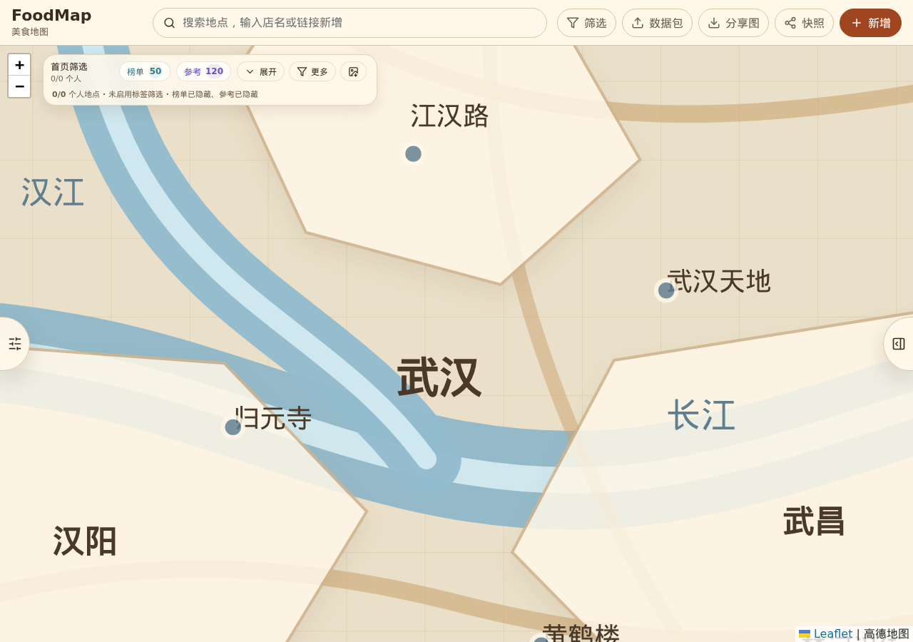
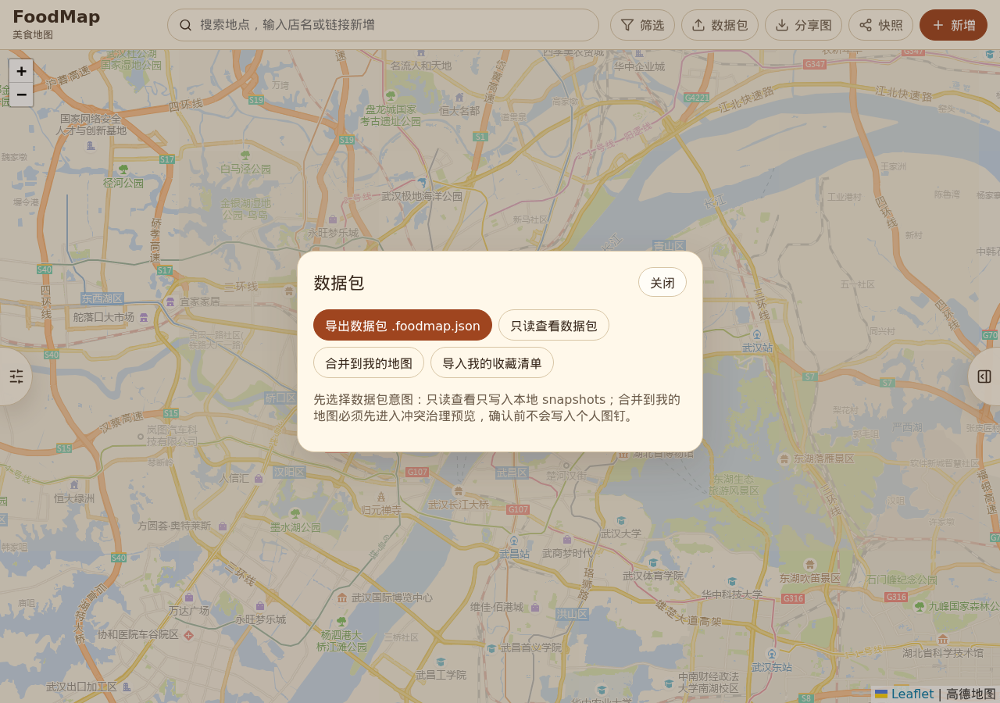
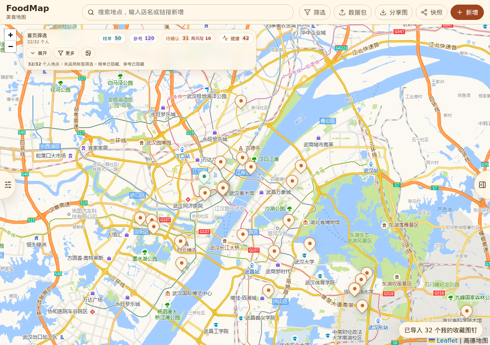
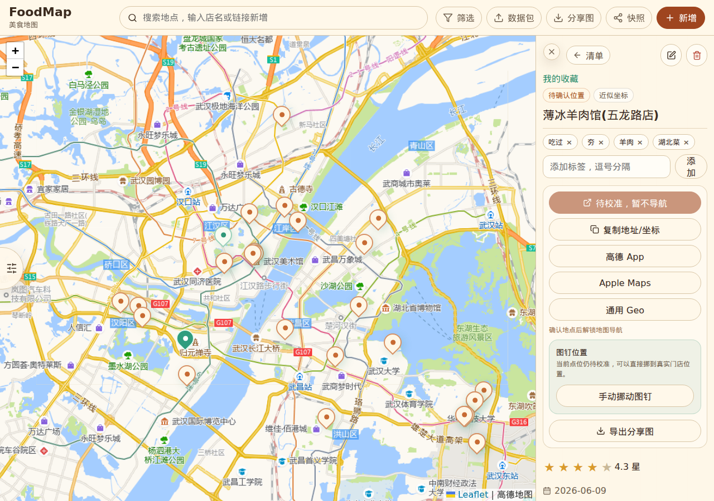
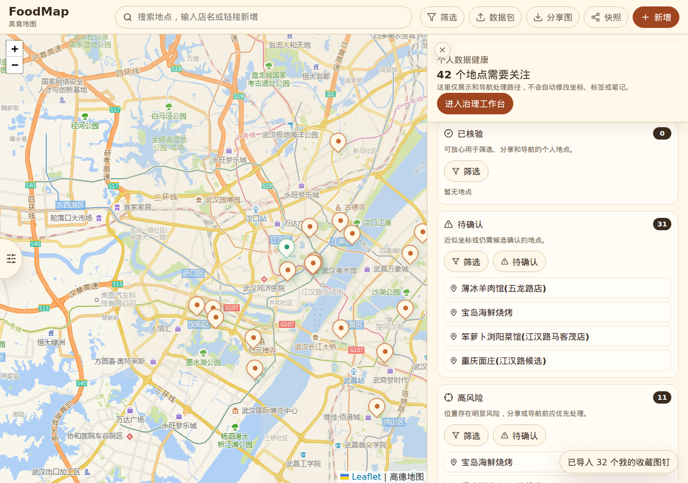
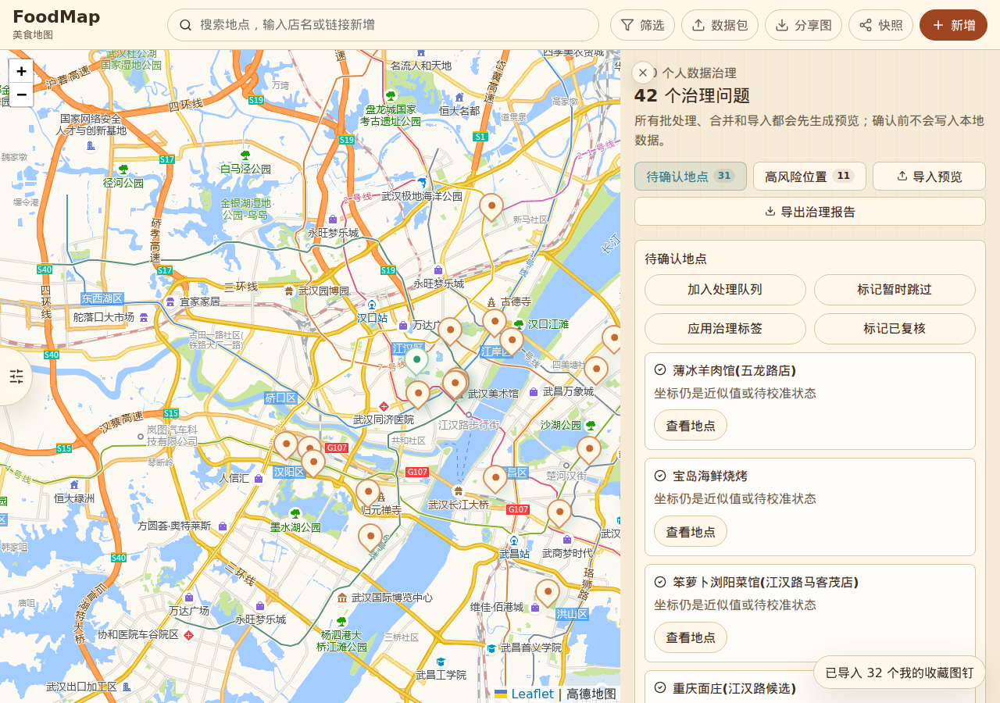
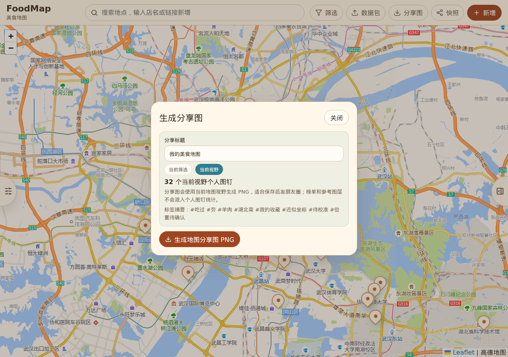
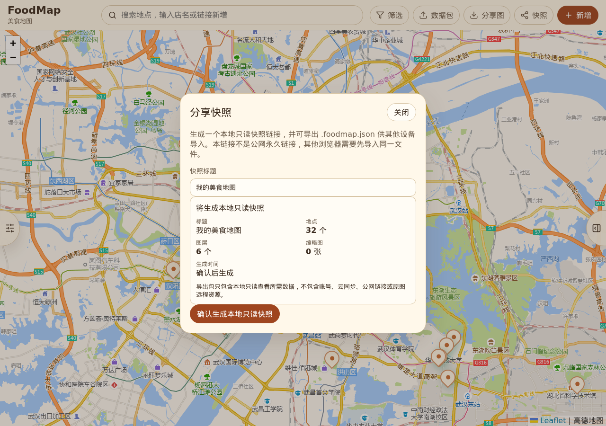
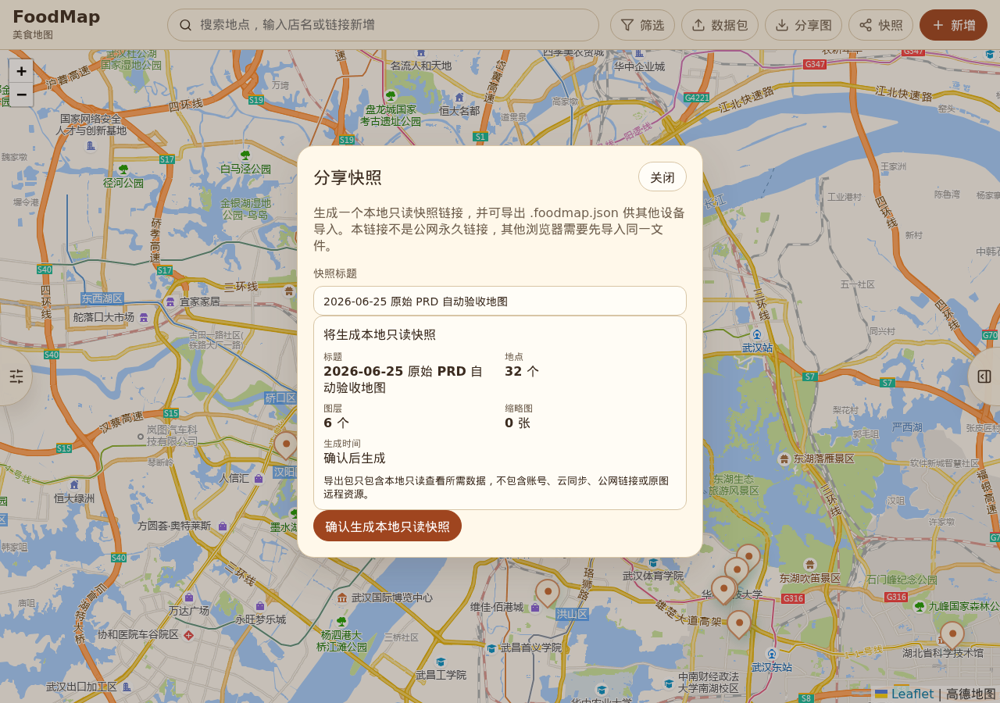
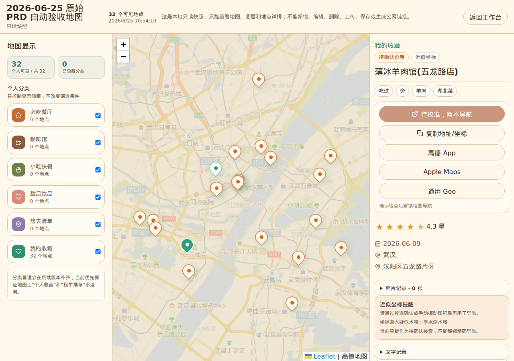
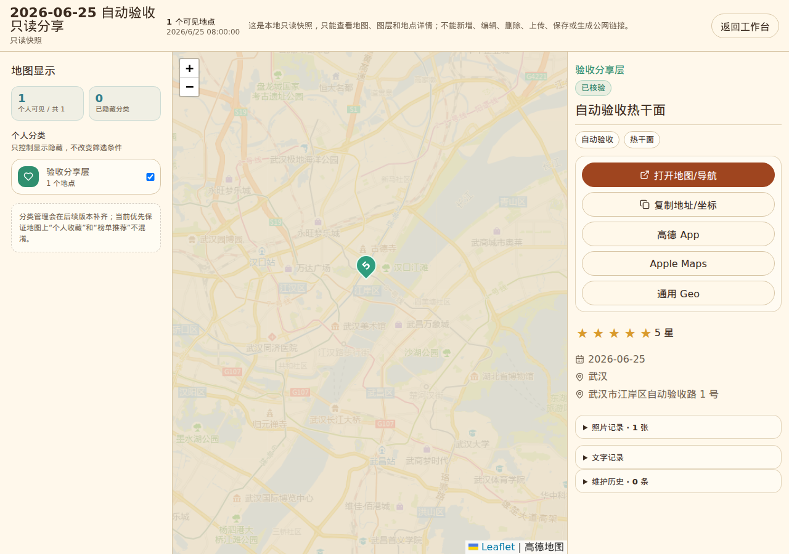
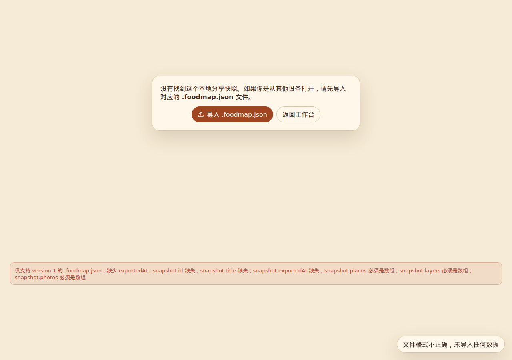
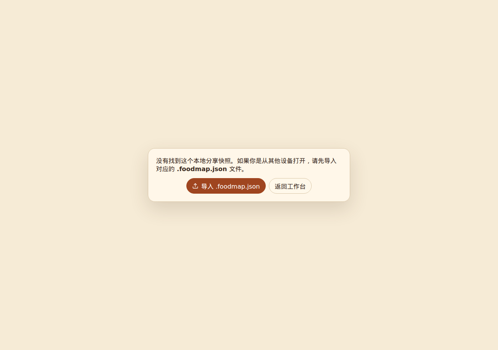
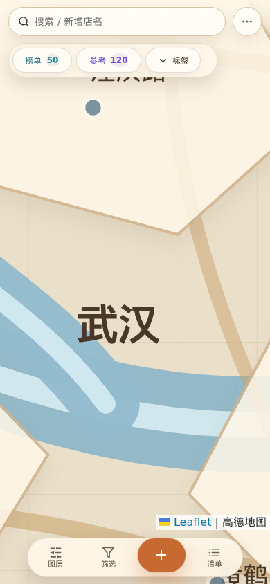
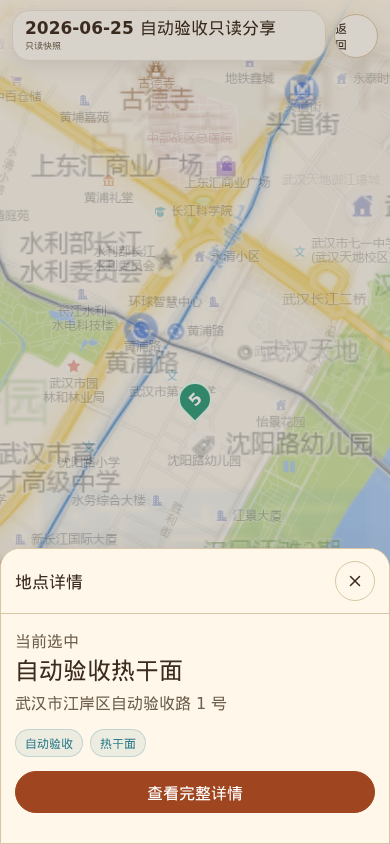
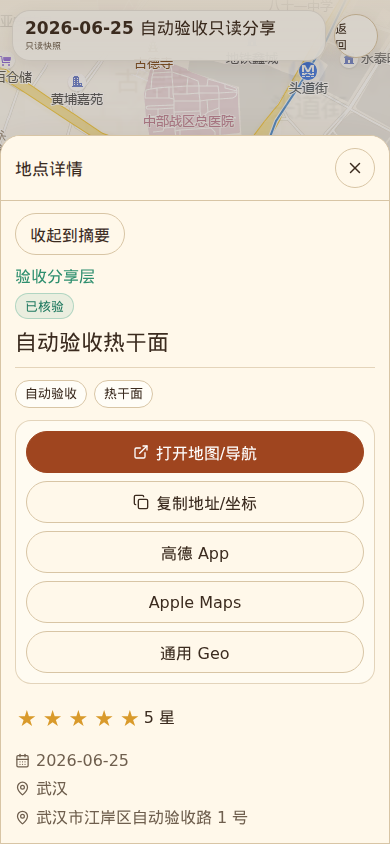
残余风险与不声明内容
注意：本报告不把以下内容宣称为已完成。
- 没有新增账号体系、云同步、永久公网分享链接或后端服务。
- 没有绕过用户确认固化坐标、批量修改治理结果或自动修复高风险数据。
- 外部实时 POI 搜索能力仍不能过度宣称为已完成；当前验收保留 P18/P19 的 trust boundary。
npm ci报告 1 个 low severity vulnerability，本轮未执行自动修复。- 截图证明覆盖的是自动化抽样路径和指定视口，不等同于所有浏览器、所有设备和所有用户数据组合穷尽验证。